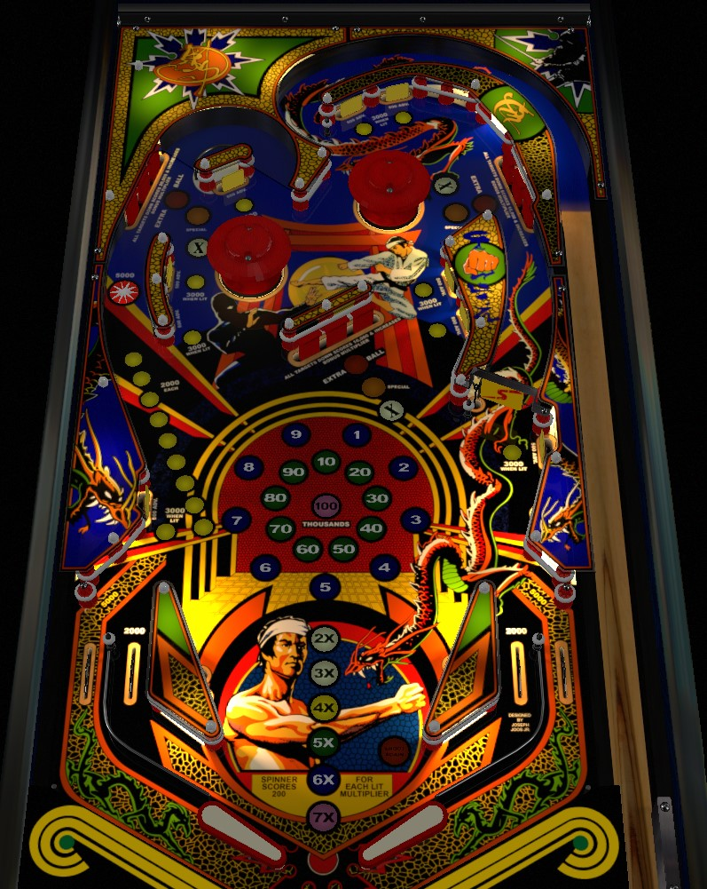

Hit standup targets to light them; lit targets score 3,000 points and a bonus advance when hit, and also add 2,000 points to the left orbit shot's value. Lighting all 9 targets will unlight all of the targets, but qualify an extra ball at one of the drop target banks. Clearing drop target banks lit white advances bonus multiplier. If bonus multiplier is high and/or carries from ball to ball, focus on hitting the right spinner very hard instead.
There are 9 yellow standup targets around the game. They are labelled "500 Adv." and "3,000 when lit"; however, they score no points when not lit, and 3,000 plus a bonus advance when lit. Fortunately, hitting an unlit target does light it. Lit targets carry over from ball to ball.
The star rollover in the left orbit scores 5,000 points, plus an additional 2,000 for each yellow target that is currently lit, for a maximum of 21,000 points, which is one of the largest single features on the table by point value.
Lighting all 9 yellow targets causes them all to unlight, and in turn lights one of the drop target banks orange. Hitting the center target in a drop bank lit orange scores an extra ball. Slingshots rotate which drop target bank is lit for the extra ball.
Each drop target down in any bank scores 1,000 points. Individual drop targets also give bonus advances, but only if the hit target's bank is lit white for a bonus multiplier. Completing a bank of drop targets scores 10,000 points for the center bank, 15,000 points for the upper right bank, or 20,000 points for the upper left bank, and also advances the bonus multiplier if that bank was lit white. Collecting a bonus multiplier moves the white light in the order upper right -> center -> upper left. Maxing out the bonus multiplier at 7x will trade in the white light for a red one; hitting the center drop target of a bank lit red scores a special. Like the orange extra ball light, the red special light rotates between banks with each slingshot hit.
The spinner base value is 100 points per spin. If the bonus multiplier is at least 2x, the spinner will alternate being worth a flat 100 points or 200 points times the number of lit bonus multipliers on each spin. At max (7x) bonus, therefore, the spinner will alternate being worth 1,200 points or 100 points on each individual spin. This can be very valuable if the bonus multiplier is at least 5x or 6x.
When the spinner is spinning, a counter on the backglass keeps track of the number of spins registered. If the spinner comes to a complete stop, the counter will reset and count from 1 the next time the spinner is hit. If the spinner comes to a complete stop with the counter on exactly 20, 40, 60, or 80, an instant special is awarded.
Dragonfist has a conventional in/out lane setup. In lanes score 2,000 points and a bonus advance. Out lanes score 5,000 points.
Bonus is advanced by lit standup targets, drop targets in banks lit for bonus multiplier, and in lanes. Max bonus is 100,000 points. There is no super bonus/bonus carryover. Bonus multiplier is advanced by clearing whichever bank of drop targets is lit white. Max bonus multiplier is 7x. Bonus multiplier can be set to carry over from ball to ball, but by default it does not.

All copyrighted names and terms in this document belong to their respective owners. The information provided in this document is for educational purposes only and no infringement is intended.
Back to top To game list To main page